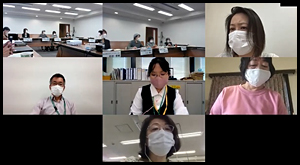

|
|
4月22日（木）10時30分より、さいたま共済会館504会議室にて、第2回実行委員会をオンライン併用で開催し、16人（14団体）が出席しました。 ＊オンライン出席5人 【議題】  1．事務局長あいさつ…預託法関連(書面交付義務の電子化反対)の意見書提出について、2050年までの温室効果ガス削減について、コロナ禍でのつながりの維持などに触れました。 2．第1回実行委員会報告…文書を確認しました 3．実行委員会体制について…実行委員会に集まること自体難しい状況もある中で、地域団体からの副実行委員長はなしとし、県域団体からの副実行委員長については、実行委員会当日は調整中でしたが、その後、こくみん共済coopに引き受けていただきました。5月から正副実行委員長打ち合わせを行って、実行委員会に臨むこととします。 4．大会スローガンについて…「自ら考え行動する消費者になろう ～誰ひとり取り残さない社会を目指して～」を提案し、確認されました。コロナ禍で新しい生活様式を取り入れ、これまで以上につながりを大切に、主体的に行動する意味を込めました。 5．分科会・プレ学習会の開催について…分科会について、例年のような実行委員会後の話し合いの場をもつことが難しいため、実行委員会団体による運営を募集します。テーマと講師や開催イメージについて寄せていただき、第3回および第4回実行委員会までに内容について検討し、開催を決定していきます。1分科会の予算は3万円まで、お知らせチラシ等作成する関係で、最終7月10日までに講師や内容、開催形態を決めていただくことが前提となります。当日までの準備等含め、各団体に一任する形ですすめます。単独でなく、複数団体が協力して開催することもあり得ます。開催形態についても、オンライン、オンライン併用、実開催のみ、開始時間など、検討事項はいろいろあります。 ＊食に関するテーマのみ、事務局もかかわります プレ学習会については、時期、テーマは未定だが、開催することを確認しました。 6．学習するテーマについて…資料に記載した通り、学習したいテーマとして寄せていただいたものはたくさんあります。消費者大会の記念講演やプレ学習会、分科会以外にも、県内消費者団体研修会などの場も含めて、学習計画を立てて学んでいきます。 7．全体会記念講演について…講演の可否について、わかり次第お知らせします。 8．団体活動交流…団体の活動状況や実行委員会にかかわる思いなど、報告し合いました。 |